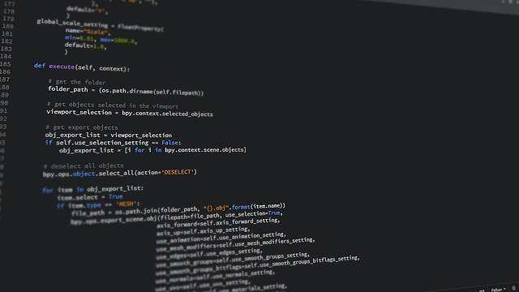

We believe security software like Whonix needs to remain Open Source and independent. Would you help sustain and grow the project? Learn more about our 14 year success story and maybe DONATE!
ChromeAdvanced
DocumentationLocal
ConnectionsPrevious
page: ChromeIndex page: Advanced
DocumentationNext page: Local
Connections
How-to: Install PyLRU in Whonix

PyLRU python library
Introduction
PyLRU is: [1]
...a true LRU cache along with several support classes. The cache is efficient and written in pure Python. It works with Python 2.6+ including the 3.x series. Basic operations (lookup, insert, delete) all run in a constant amount of time. Pylru provides a cache class with a simple dict interface. It also provides classes to wrap any object that has a dict interface with a cache. Both write-through and write-back semantics are supported. Pylru also provides classes to wrap functions in a similar way, including a function decorator.
PyLRU Setup
 Perform the following procedure in Whonix-Workstation™ (Qubes-Whonix™:
Perform the following procedure in Whonix-Workstation™ (Qubes-Whonix™:
anon-whonix App Qube).
Download
Acquire the PyLRU
source code by Jay Hutchinson (jlhutch on
GitHub).
git clone https://github.com/jlhutch/pylru ~/pylru
Digital Signature Verification
 This section is optional, but provides better security.
This section is optional, but provides better security.
1. Import Jay Hutchinson signing key. [2]
Note: File name and URL might change in the future from
.gpg to .asc in the future as per PyLRU github issue:
please upload your OpenPGP / gpg public key.
- Digital signatures are a tool enhancing download security. They are commonly used across the internet and nothing special to worry about.
- Optional, not required: Digital signatures are optional and not mandatory for using Whonix, but an extra security measure for advanced users. If you've never used them before, it might be overwhelming to look into them at this stage. Just ignore them for now.
- Learn more: Curious? If you are interested in becoming more familiar with advanced computer security concepts, you can learn more about digital signatures here: Verifying Software Signatures
Securely download the signing key.
scurl-download https://github.com/jlhutch.gpg
Display the key's fingerprint.
gpg --keyid-format long --import --import-options show-only --with-fingerprint jlhutch.gpg
Verify the fingerprint. It should show.
Note: Key fingerprints provided on the Whonix website are for convenience only. The Whonix project does not have the authorization or the resources to function as a certificate authority, and therefore cannot verify the identity or authenticity of key fingerprints. The ultimate responsibility for verifying the authenticity of the key fingerprint and correctness of the verification instructions rests with the user.
In late-2023, the output is identical to the following.
Key fingerprint = 1E0B 4C97 BD81 966B 3BDC F84D 2FF6 B003 25E9 519C
The most important check is confirming the key fingerprint exactly matches the output above. [3]
 Warning:
Warning:
Do not continue if the fingerprint does not match! This risks using infected or erroneous files! The whole point of verification is to confirm file integrity.
Add the signing key.
gpg --import jlhutch.gpg
2. Enter the repository. cd ~/pylru
3. Perform digital signature verification. [4]
git verify-commit HEAD
If the file is verified successfully, the output will include
Good signature, which is the most important thing to
check.
gpg: WARNING: This key is not certified with a trusted signature!
gpg: There is no indication that the signature belongs to the owner.This message does not alter the validity of the signature related to the downloaded key. Rather, this warning refers to the level of trust placed in the Whonix signing key and the web of trust. To remove this warning, the Whonix signing key must be personally signed with your own key.
Installation
1. Create folder
/usr/local/lib/python3.11/dist-packages/.
sudo mkdir -p /usr/local/lib/python3.11/dist-packages/
2. Install pylru.py in folder
/usr/local/lib/python3.11/dist-packages/.
sudo cp ~/pylru/pylru.py /usr/local/lib/python3.11/dist-packages/
3. Done.
PyLRU installation is now complete.
Troubleshooting
electrumx_server[]: PermissionError: [Errno 13] Permission denied: '/usr/local/lib/python3.11/dist-pa...pylru.py'Permission fix.
Required in some build versions of Whonix. [5]
sudo chmod --recursive o+r /usr/local/lib/python3.11/dist-packages
Footnotes
- ↑ https://pypi.org/project/pylru/
- ↑ * https://github.com/jlhutch/pylru/issues/33 * https://web.archive.org/web/20231219165732/https://api.github.com/users/jlhutch/gpg_keys
- ↑ Minor changes in the output such as new uids (email addresses) or newer expiration dates are inconsequential.
- ↑ Alternative command: git log -1 --show-signature }}
- ↑ The issue is the read permission for
"
others" than root were not set during file creation. Related issue: Restrict umask to 027 except for sudo/root broken
Categories: Documentation